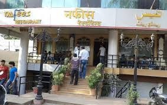

 It is one of the most famous places among people of Indore & travellers for Indian non-vegetarian food !! People really swear by its Biryaanis, Tandoori Raan, Haleem, Mutton Burra Kebab, and other kebabs, among other curries and dishes !! It does also serve some vegetarian food and Chinese cuisine dishes (both vegetarian & non-vegetarian) !! Old and a well known place to eat non veg. Separate family space is given to respect comfort level. Liked nafees special chicken Avg. Price/Head:₹ 200